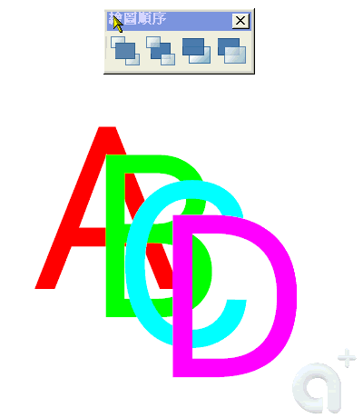
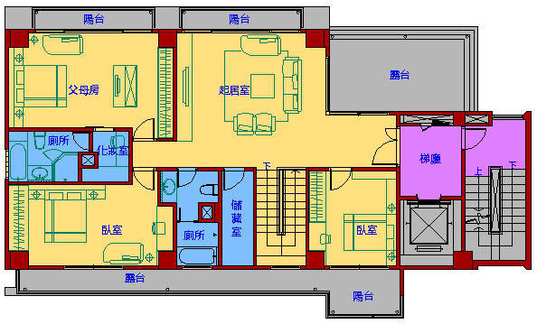

※※※ 以下方法適用於 AutoCAD 2004 以上版本 ※※※
請使用「繪圖順序工具列」DRAWORDER指令 →「置於最上方」....選取欲移動的圖層物件即可。
PS:建議將圖層分類後，搭配 圖層工具列 即能發揮最大效率。
----------------------------------------------------------------------------------------------
※控制覆疊物件的顯示方式:
一般而言，覆疊物件 (例如，文字、寬聚合線與實面填實多邊形) 以它們的建立順序顯示：新建立的物件位於既有物件的前面。
您可以使用 DRAWORDER 來變更任何物件的繪圖順序 (即顯示與出圖順序)。
TEXTTOFRONT 變更圖面中所有文字與標註的繪圖順序。
資料來源:AutoCAD2007說明
----------------------------------------------------------------------------------------------
※動態操作步驟如下:有問題請再提

※一般繪圖順序的運用，在各領域各有不同的用途，以建築圖為例:
1.以下標準層平面圖，依室內、室外、結構體、線稿及文字來區分使用空間

2.使用剖面線(HATCH)的SOLID樣式來進行上色的動作，因作圖時順序不同，各顏色區塊順序可能不對

3.此時，繪圖順序工具列則是一個理想的幫手，先把所有物件的順序分解出來，再逐一進行物件順序的排列即可

----------------------------------------------------
您可以控制哪些覆疊物件要顯示在頂端。
一般而言，覆疊物件 (例如，文字、寬聚合線與實面填實多邊形) 以它們的建立順序顯示：新建立的物件位於既有物件的前面。 您可以使用 DRAWORDER 來變更任何物件的繪圖順序 (即顯示與出圖順序)。 TEXTTOFRONT 變更圖面中所有文字與標註的繪圖順序。